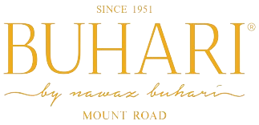

Mr. A.M. Buhari a former Sherif of Madras, moved to Colombo, Sri Lanka at an early age for his education. It wasn't long after completing his schooling that he discovered his calling, and through his passion for creating food, he carved out a worthy legacy in the culinary industry. He was the first person in the City of Madras to combine the fine dining that the British had perfected, with Indian food to shape a whole new dining experience.